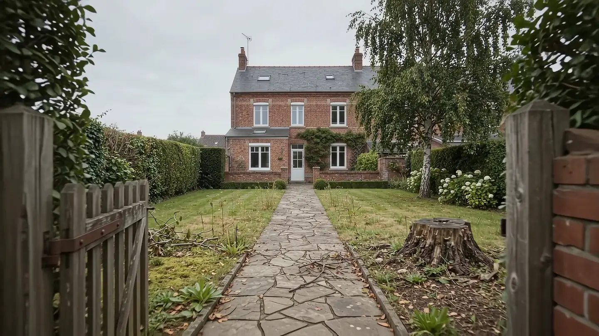
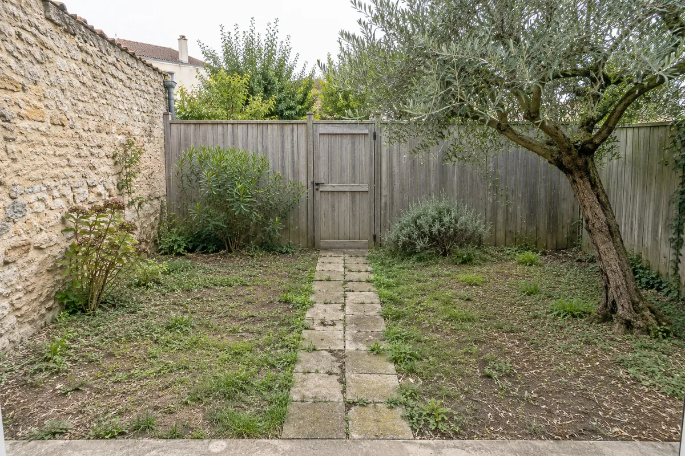
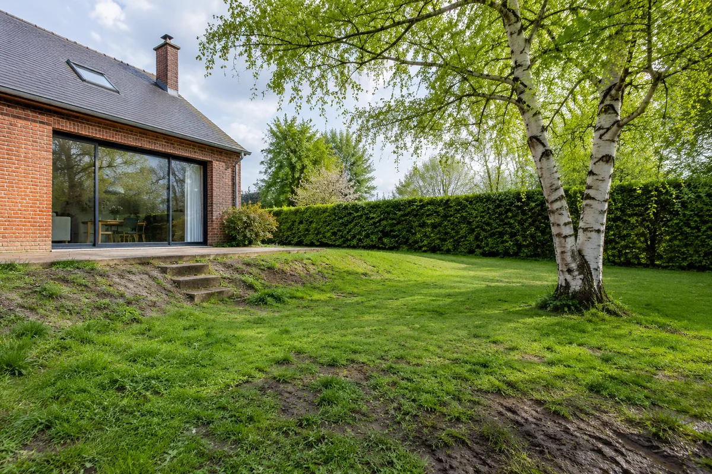
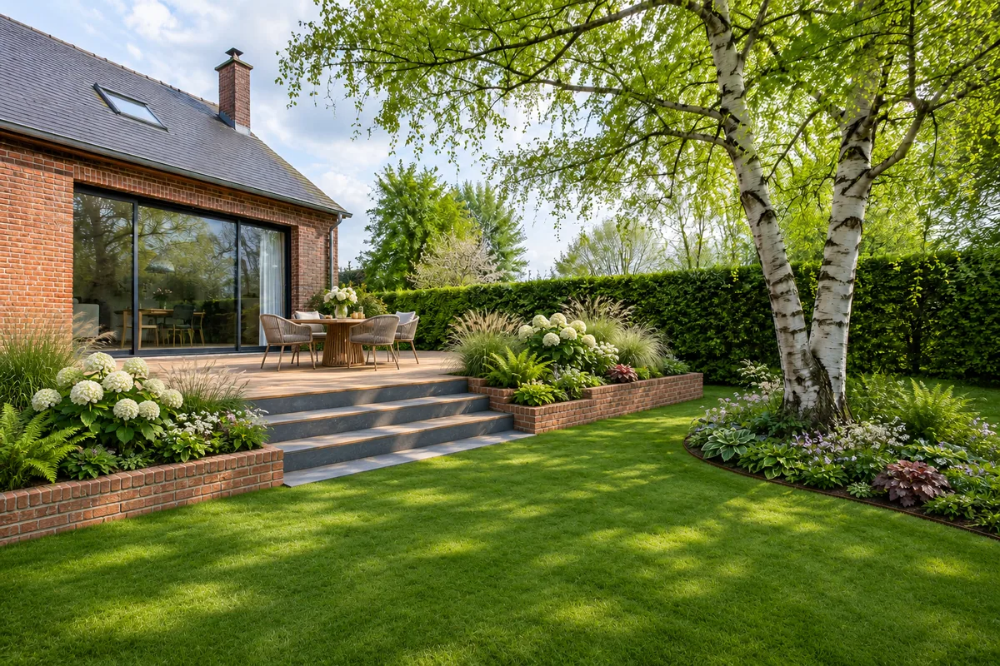
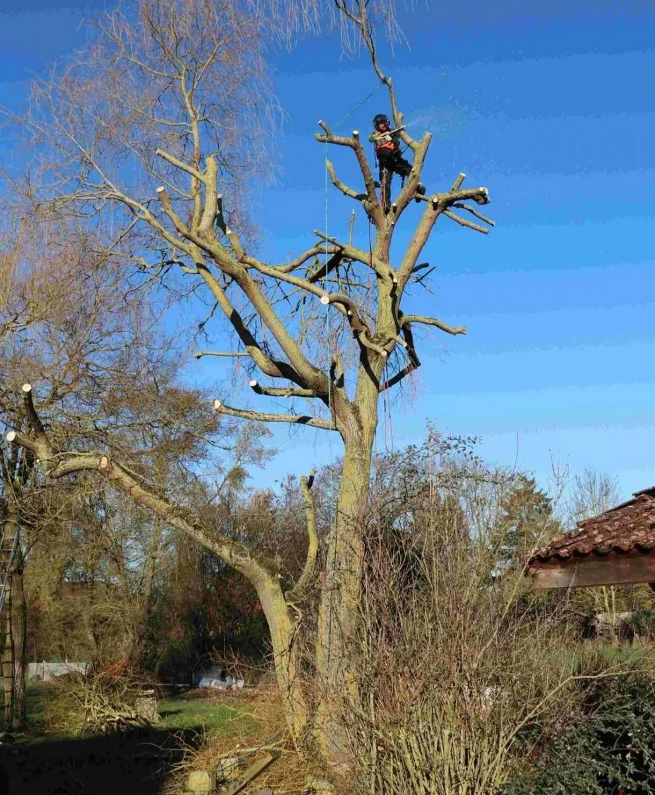
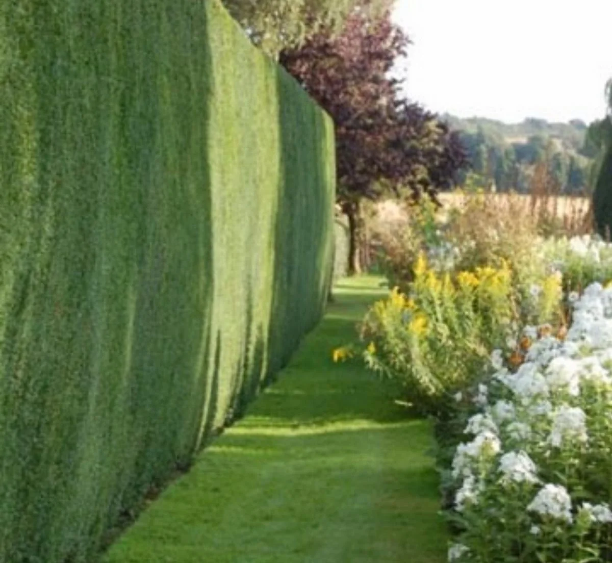
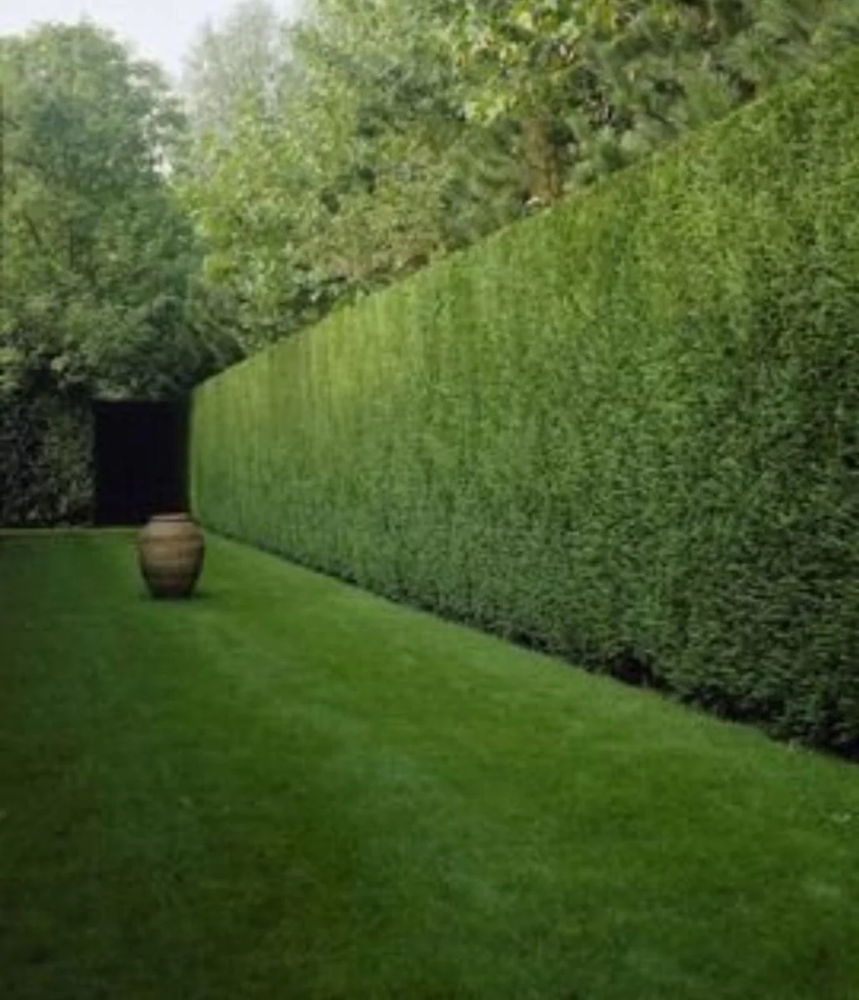
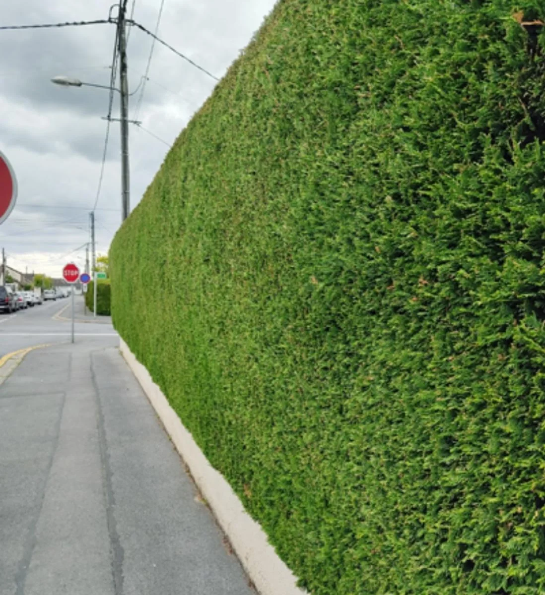

Le Ch’ti ÉlagueurVotre élagueur à Lambersart · Nord et Pas-de-Calais
Faites défiler pour visiter
Nos services
Sept savoir-faire pour vos arbres
De l’élagage à l’évacuation des déchets verts, le Ch’ti Élagueur s’occupe de tout, à Lambersart et dans tout le Nord et le Pas-de-Calais.
Avant / Après
Le résultat, en un geste
Faites glisser le curseur pour comparer le jardin avant et après l’intervention du Ch’ti Élagueur.




Réalisations
Nos chantiers en images
Feuilletez nos réalisations : cliquez sur une page ou faites glisser son coin.
Nos réalisations
Dix chantiers en images

Élagage d’un grand arbre, élagueur au sommet
Des arbres sains, sûrs et bien dessinés.

Haie taillée en bordure d’un massif fleuri
Des haies nettes, à prix modérés.

Taille d’une grande haie de thuyas
Des haies nettes, à prix modérés.

Élagueur équipé découpant un tronc
Même les arbres dangereux, en toute sécurité.

Élagueur encordé en hauteur dans un arbre
Des arbres sains, sûrs et bien dessinés.

Haie de thuyas taillée au cordeau
Des haies nettes, à prix modérés.

Découpe d’une souche à la tronçonneuse
Souches retirées, terrain dégagé.

Arbre abattu avec ses racines
Même les arbres dangereux, en toute sécurité.

Élagage d’un arbre avec une échelle
Arbres d’ornement et fruitiers, taillés avec soin.

Haie taillée en bordure de trottoir
Des haies nettes, à prix modérés.
Le prochain chantier, c’est le vôtre
Lun – Ven · 8 h – 19 h · 06 04 43 98 99
Demander un devisCouverture
Toutes les réalisationsNotre approche
Des arbres sains, des haies nettes et un chantier rendu propre.
- Devis gratuit
- Du lundi au vendredi, de 8 h à 19 h
- Nord (59) et Pas-de-Calais (62)
« Équipe au top, super sympa, travaille carré. »
Le Ch’ti Élagueur, votre élagueur à Lambersart
Le Ch’ti Élagueur s’occupe de vos arbres et de votre jardin à Lambersart et dans tout le Nord et le Pas-de-Calais : élagage, abattage d’arbres même dangereux, taille de haies à prix modérés, taille d’arbres, dessouchage, entretien de jardins et d’espaces verts. À la fin de chaque chantier, les déchets verts sont évacués.
Le devis est-il gratuit ?
Oui. Appelez le 06 04 43 98 99 ou remplissez le formulaire : nous venons voir vos arbres ou votre haie, puis nous vous remettons un devis clair, gratuit et sans engagement.
Où intervenez-vous ?
Nous sommes basés à Lambersart et nous nous déplaçons dans tout le Nord (59) et le Pas-de-Calais (62) : Lille, Lomme, Saint-André-lez-Lille, La Madeleine, Marcq-en-Barœul, Wambrechies, Pérenchies et bien d’autres communes.
Que faites-vous des branches et des déchets ?
Nous les ramassons et nous les évacuons : branches, troncs, tailles de haie, souches et feuilles. Vous n’avez rien à porter à la déchetterie.
Pouvez-vous abattre un arbre dangereux près de la maison ?
Oui. Quand l’arbre ne peut pas tomber d’un seul bloc, il est démonté par morceaux, du haut vers le bas, pour protéger la maison, la clôture et les plantations.
Quand tailler une haie ou élaguer un arbre ?
Les haies se taillent en général à la fin de l’hiver et à la fin de l’été, en évitant la période où les oiseaux nichent. La plupart des arbres s’élaguent pendant leur repos, de la fin de l’automne à la fin de l’hiver. Une branche morte ou dangereuse, elle, se retire à tout moment.
Zones d’intervention
Élagueur à Lambersart, dans le Nord et le Pas-de-Calais
Basé à Lambersart, le Ch’ti Élagueur se déplace dans tout le Nord (59) et le Pas-de-Calais (62). Voici les communes où il intervient le plus souvent.